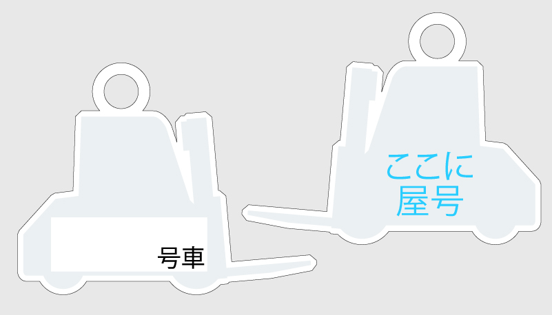

2017年 / 制作時間 3日 / Adobe Illustrator CC
某企業 納品車両キー添付用のキーホルダーを製作しました。
アクリルキーホルダーは正方形サイズでの注文が基本のため、全長の短い1tフォークのシルエットをベースとし爪の長さを適度にデフォルメしてあります。
キーホルダー製作

2017年 / 制作時間 3日 / Adobe Illustrator CC
某企業 納品車両キー添付用のキーホルダーを製作しました。
アクリルキーホルダーは正方形サイズでの注文が基本のため、全長の短い1tフォークのシルエットをベースとし爪の長さを適度にデフォルメしてあります。